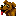
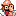

This is the toolbar in ZAMN Editor
Opens a ROM with the editorOpens a level
 Saves the current level
Saves the current level Deletes the currently selected objects and copies them to the clipboard
Deletes the currently selected objects and copies them to the clipboard Copies the currently selected objects to the clipboard
Copies the currently selected objects to the clipboard Pastes the content from the clipboard into the level
Pastes the content from the clipboard into the level Undoes the last edit to the level
Undoes the last edit to the level Redoes the last edit that was undone
Redoes the last edit that was undone Change the zoom percentage
Change the zoom percentageSwitches to the Brush Tool
 Switches to the Tile Suggest Tool
Switches to the Tile Suggest Tool Switches to the Rectangle Select Tool
Switches to the Rectangle Select ToolSwitches to the Pencil Select Tool
Switches to the Tile Select Tool
Switches to the Item Tool
 Switches to the Victim Tool
Switches to the Non-Respawning Monster Tool
 Switches to the Respawning Monster Tool
Switches to the Respawning Monster Tool Switches to the Boss Monster Tool